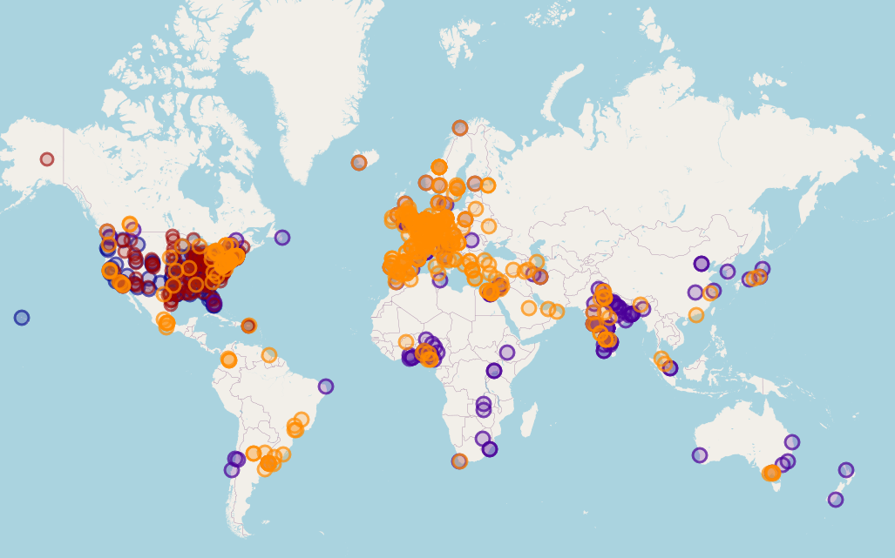

Check out our new
paper
in
The Lancet Neurology
where we highlight some the biggest changes in neuroscience over the past 20 years.
Be sure to check out
labFinder!
It's an interactive map I made to find (neuroscience) research institutes/universities around the world. I hope it's a fun and useful tool for finding cool labs. Code available on
GitHub
so please share feedback or contribute to the project there!

Defended my PhD yesterday! Wonderful day talking about science and feeling lots of love from family, friends, and colleagues.
Now paternity leave for the rest of the year before starting my postdoc in the
Moser lab.
Spring and summer were packed with exciting news and yet no updates from me!
April 6th: We had a baby and she is just perfect.
June 27th: I submitted my PhD thesis: A Novel Mechanism of Hippocampal Remapping.
July 11th: We bought our first house. It's awesome.
July 28th: Thesis found worthy of public defense, scheduled for October 2nd.
Second exercise from Massive Science is live! One Concept, Five Audiences: Mechanisms of hippocampal remapping.
Check out my first writing exercise for Massive Science where I summarize the latest findings from the Knierim lab. You don't need a FitBit. There's an activity tracker in your brain.
I recently became a member of the
Massive Science Consortium
to improve my writing skills and to connect with their great community. Keep an eye out for my posts there (@beneuroscience) and I'll also share my published stories here and on Twitter.
I posted copies of my papers above ☝️ for those without access. Reminder that to get behind the pay wall just email the authors. They can (and will be delighted to) provide you with their papers.
Added Twitter feed to the home page.
Added a link to my GitHub page above ☝️ which has 2 toolboxes for analyzing electrophyisiology data in freely-moving animals.
Please harvest any bits and pieces that are useful to you.
I also added a gallery to share fun pictures from the lab.
Bruce McNaughton and Freyja Ólafsdóttir have agreed to be opponents for my PhD defense! Now just publish a few papers, write my thesis, welcome our daughter into the world, and maybe buy our first home before October. No problem.
Christy and I have accepted postdocs in the Moser lab starting in 2020! Can't wait to embark on a new line of research and excited to raise our little girl in beautiful Norway.
Website is born!